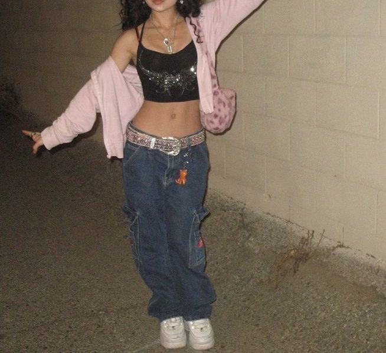

Esta tendencia consiste en el rescate directo de la mezclilla rígida sin elastano, las playeras de bandas musicales antiguas con texturas desgastadas y chaquetas de cuero estilo motociclista. El calzado robusto de suelas de tractor pesadas y los lentes de sol pequeños con micas de colores transparentes marcan el estilo urbano retro contemporáneo.
La clave de este estilo es mezclar prendas auténticas de épocas pasadas con accesorios modernos, logrando un impacto visual rudo, contracultural y único que rompe con la producción masiva de ropa actual.
